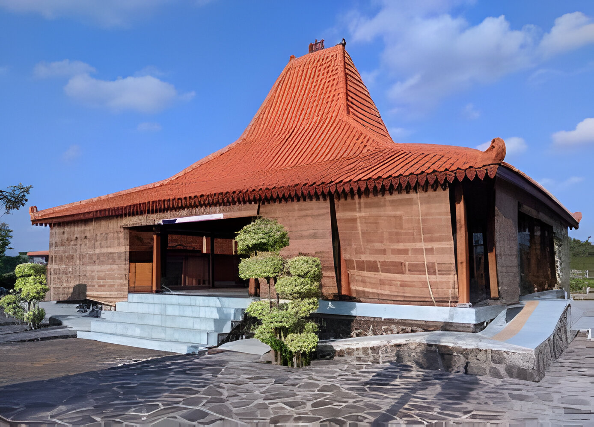

Kebudayaan di Borobudur
Selamat datang di Candi Borobudur, keajaiban bersejarah Indonesia. Temukan keindahan dan sejarahnya yang megah sebagai warisan budaya dunia
Baca Lebih Lanjut..

Rumah Joglo Tradisional
Selamat datang di Rumah Joglo Tradisional, representasi kekayaan arsitektur tradisional Jawa. Temukan keindahan dan makna dalam setiap detailnya. Klik untuk informasi lebih lanjut
Baca Lebih Lanjut..
Upacara Grebeg Sudiro
Rasakan kegembiraan dan tradisi Jawa dengan menghadiri upacara Grebeg Sudiro yang meriah, sebuah perayaan budaya yang menggabungkan kesenian, kuliner, dan kearifan lokal.
Baca Lebih Lanjut..